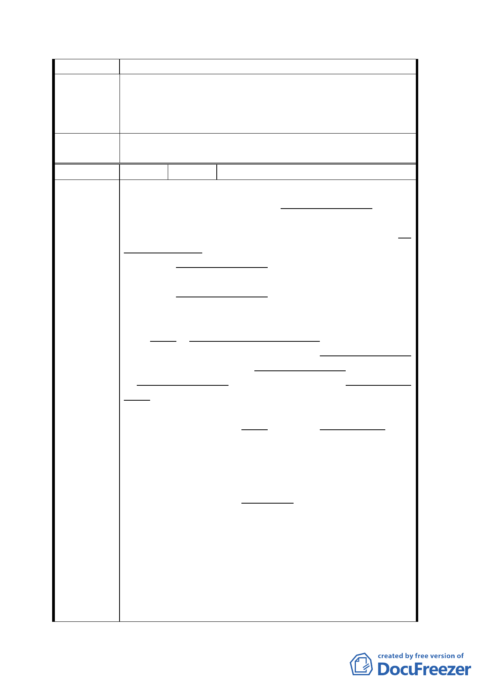

齡、老舊不堪，有待更新。
1. 反對將西寧南路 261-263 號之房地列為廣場用
建議辦法
2.
地並讓售該建物之土地。
請鬆綁政策令其改建，以利市容美化及都市發
展。
委員會決
議
同決議一、二。
編 號 19 陳情人 陳 張 秋 月
（１）憲法第 143 條 第四項：国家對於土地之分配
與整理、應以扶植自耕農及自行使用土地人為原
則、並規定其適當経營之面積。
其立法精神是本於優先顧及民生、注重扶植増加自
行使用土地人、而絶非鼓勵主管土地之政府機関、
完全不顧自行使用土地人之、土地使用権利及處
境、而専以獲得金錢為第一目的、依標售方式出售
土地、使自行使用土地人之生活前途、置於得標商
人之手。此法條無狹義的明確限定土地為農地、當
應廣義的適用於一般土地、含在本函内所述廣場計
晝案土地含貴陽街合法建築物基地。
國有財産局或台北市政府不可違反自行使用土地人
之意思、以強制方法使自行使用土地人放棄、或未
経自行使用土地人之同意、出售或處分自行使用土
陳情理由
地人所使用之土地。
過去對沿貴陽街並肩相連已逾半世紀之合法建築物
基地、即廣場計晝案土地靠南之、辺縁小部分、國
有財産局完全忽視其所有人之権益、而多次為強行
標售（終於流標）顕然與上述憲法第 143 絛第四項
之、立法精神不甚相應。
國有財産局似應積極、另尋洽當替代案、以取代現
由台北市政府主導之廣場計畫。
（２）廣場計畫： 現由台北市政府、都市計畫委
員會主導之廣場計畫、事先未曽實地調査、隣近居
民之實際迫切需求、以做計畫之指標。該計畫注重
於拆除現有違建之工程、及対違建居民發放遷移補
償金。所需費用鉅大、而能自廣場計畫獲得之効益
及反効果、却無任何具体之評估。廣場可能招來之
非法行業、及其可産生之後遺症、可説後患無窮。
二五